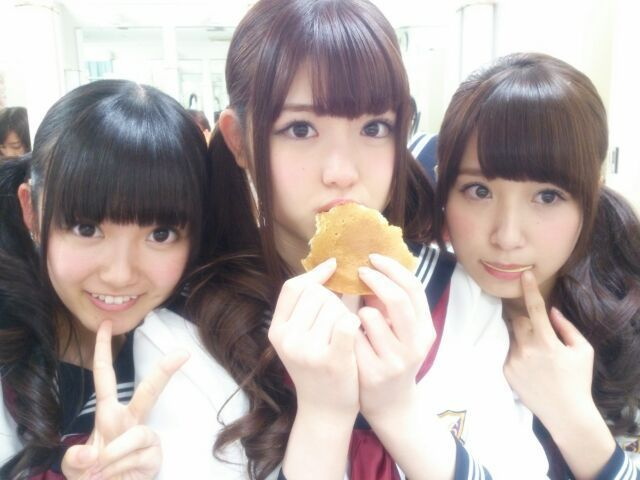
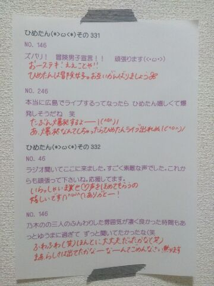

| 2013/11 22 Fri | ひめたん(*>ω<*)そ の372 |

このあと24:58~
ミュージックドラゴンで
バレッタ歌ってます(∩´∀`∩)
ちょーっと夜遅いけど
明日お仕事ないよ学校ないよって方は
ぜひ夜更かしして観てください＊
今晩だけはひめたんが許す！
ついでにお知らせっ
11/23(土)18:00~MUSIC FAIR
こっちもバレッタ歌ってます
よろしくお願いします＊
それから、ちょっと先の話だけど
公式で発表になったので
お知らせさせてくださいっ
12/22(日)
国立代々木競技場第一体育館
FamilyMart Presents
MUSIC FOR ALL, ALL FOR ONE 2013
今年も出させていただけることに
なりました！
武道館の次の次の日。
ぜひ遊びに来てください♪
私たちのニューシングル「バレッタ」が
先行配信スタートしました！！
レコチョクではオリジナル携帯待受をプレゼント！！
詳しくは公式HPでみてね！
DLはこちら！
http://recochoku.jp/artist/30168093/

さて、ひめたんがいつも最後に貼ってる
手書きの質問返しの写めですが
最近ひめきゅんさんになったよーって方にも
知っていただきたいので
改めて説明しますね◎
ブログのコメント欄に
書いていただいた質問の中から
いくつかピックアップして答えたりしていますが
その中でも46、146、246みたいに
下２桁が「46」だった方にはもれなく
手書きで質問返しをしています*\(^o^)/*
ひめたんコメント読むのが好きだから
いつも楽しませてもらってるのねっ
だから、ひめたんと同じように
書いてくださるみなさんにもちょっとでも
わくわくどきどききゅんきゅんしてもらえたら
ひめたんは幸せなのです！
そうだなーなんか今までふわっとやってきたけど
ばっちりコーナー化した方が
わかりやすいよねー
なんかこのコーナーにも名前が欲しい。つけよう。
ひめたんネーミングセンスないので
思いついた方はぜひ教えてくださいなー♪
とりあえず。今日は。どうしよう......
＼ Today's 46 !!!／

ステキなコーナー名
お待ちしております(切実)
(＊´・ω・＊)
コメント(425)
2013/11/22 22:18